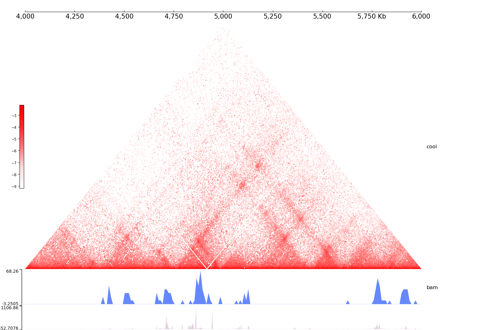

CoolBox is an open-source, user-friendly toolkit for visual analysis of genomics data. It is highly compatible with the Python ecosystem and customizable with a well-designed user interface. It can bed used, for example, to produce high-quality genome track plots or fetch commonly used genomic data files with a Python script or command line, to explore genomic data interactively within Jupyter environment or web browser.
Allocate an interactive session and run the program. Sample session:
[user@biowulf]$ sinteractive [user@cig 3335 ~]$ module load coolbox [+] Loading singularity 3.10.5 on cn3335 [+] Loading coolbox/0.3.8 [user@cn3335 ~]$ mkdir /data/$USER/coolbox &&iamp; cd /data/$USER/coolbox [user@cn3335 ~]$ cp $CB_DATA/* . [user@cn3335 ~]$ wget https://github.com/GangCaoLab/CoolBox/archive/refs/tags/0.3.8.tar.gz [user@cn3335 ~]$ tar -zxf 0.3.8.tar.gz &&iamp; rm -f 0.3.8.tar.gz &&iamp; cd CoolBox-0.3.8 [user@cn3335 ~]$ scripts/coolbox add XAxis - add Cool ../cool_chr9_4000000_6000000.mcool - add Title "cool" - add BAMCov ../bam_chr9_4000000_6000000.bam - add Title "bam" - add BigWig ../bigwig_chr9_4000000_6000000.bw - goto "chr9:4000000-6000000" - plot test_coolbox.png